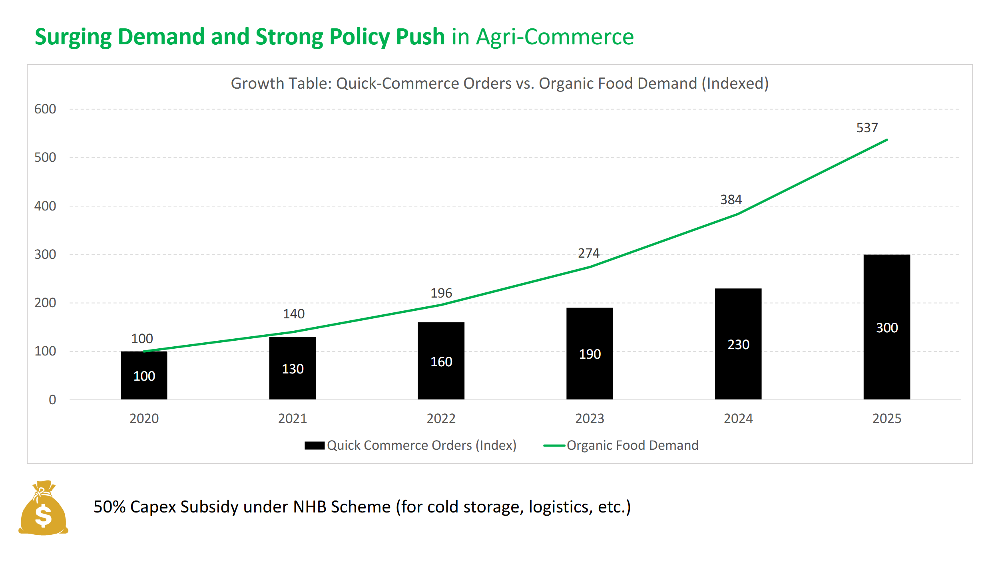
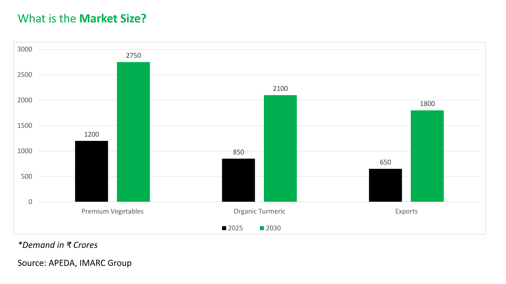

Market Opportunity & Growth Outlook
India's premium agri-produce categories—hydroponic vegetables and high-curcumin Lakadong turmeric—are growing rapidly. Seechur Agro operates at this intersection with traceable, high-quality produce backed by strong B2B channels and export demand.
Surging Demand & Policy Push

Market Size & Growth to 2030
| Segment | 2025 (₹ Cr) | 2030 (₹ Cr) | CAGR |
|---|---|---|---|
| Premium Vegetables | 1200 | 2750 | ~18% |
| Organic Turmeric | 850 | 2100 | ~19% |
| Exports (select agri) | 650 | 1800 | ~22% |

Competitive Edge
- Capital efficiency: Restart using existing polyhouse/greenhouse assets.
- Premium mix: Hydroponic vegetables for cash-flow + high-curcumin Lakadong for value.
- Traceability: Batch-level testing & compliance for retail chains and export buyers.
- Speed to market: Microgreens revenue from Day-30; vegetables stabilise by Month-6.
Market Strategy & Buyers
- Quick-commerce: Zepto, Blinkit, Instamart for cucumbers/greens.
- Modern trade: Regional fresh chains & HoReCa suppliers.
- Export / nutraceutical: High-curcumin Lakadong lots with lab certification.
Policy & Government Support
Mission Lakadong (Meghalaya)
State-backed mission supporting acreage, testing, processing and market linkage for Lakadong turmeric.
NHB & AIF
NHB: Up to 50% capex subsidy for eligible infra. AIF: Low-interest loans with interest subvention.
APEDA & Spices Board
Export facilitation, quality norms, and market linkage programs for organic spices and fresh produce.
Summary
Seechur Agro is positioned to capture the fastest-growing niches of Indian agribusiness—premium hydroponic vegetables and high-curcumin Lakadong turmeric—through capital-efficient refurbishment, strong B2B channels, and policy alignment.
“India’s agri-future lies in traceable, high-yield, low-water cultivation — Seechur Agro is building that bridge.”